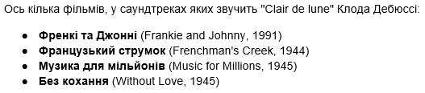
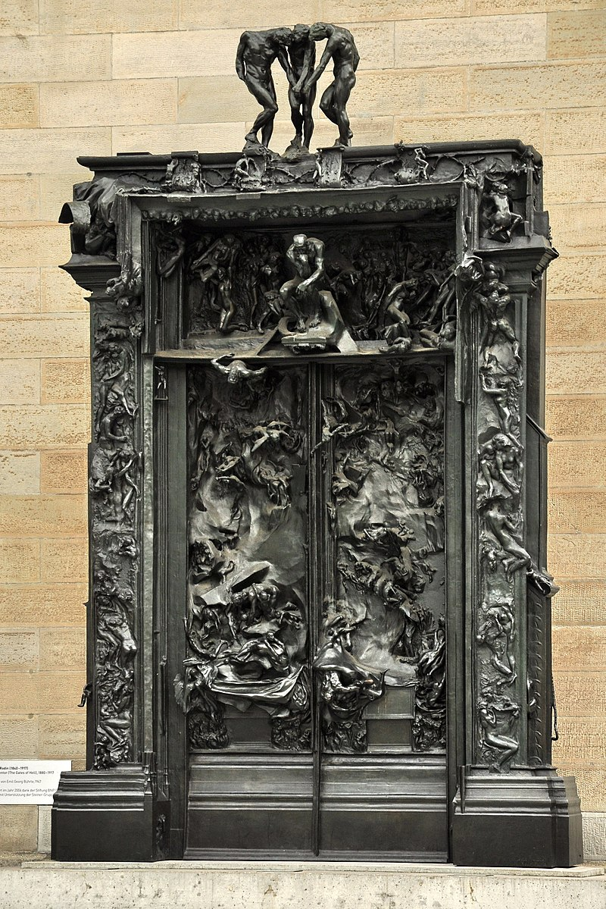

Послухайте "Clair de lune" Клода Дебюссі у виконанні Менахема Пресслера. Залитий місячним сяйвом: "Clair de lune" Клода Дебюссі – це ода нічному небу. Цей один із найвідоміших творів французького композитора отримав емоційну інтерпретацію 17 жовтня 2012 року на концерті в Залі Плеєль у Парижі від віртуозного піаніста Менахема Пресслера (1923-2023), якому на той час було майже 90 років.Твір "Clair de lune" є частиною "Бергамаської сюїти", написаної Клодом Дебюссі у 1890 році. Вона складається з чотирьох частин; "Clair de lune" – третя з них. Вперше сюїта для фортепіано була виконана у 1905 році. Клод Дебюссі часто черпав натхнення з поезії Поля Верлена – чуттєвих, похмурих описів світу природи, що відповідали смакам кінця 19 століття. "Clair de lune" також був натхненний однойменним віршем Верлена. Ця окрема частина сюїти часто включається до концертних програм і надзвичайно популярна – не лише на сцені. "Clair de lune" також звучить у багатьох саундтреках до фільмів.

Прочитай про історію створення відомої скульптури Огюста Родена “Мислитель”
Мисли́тель (фр. Le Penseur) — одна з найвідоміших скульптур Огюста Родена, над якою він працював з 1880 по 1882 роки. Нині вона є експонатом музею Родена в Парижі. Крім оригіналу, існує близько 20 копій з гіпсу та бронзи.Згідно із задумом Родена скульптура зображає автора «Божественної комедії» — Данте Аліґ'єрі. Моделлю для її створення послужив паризький м'язистий боксер Жан Бо (фр. Jean Baud), що виступав на площі Пігаль (тоді — квартал червоних ліхтарів). У 1902 році скульптор збільшив свого «Мислителя» до 181 см.Зменшена скульптура «Мислителя» є фрагментом скульптурного порталу «Ворота пекла».
Ворота пекла, Роден( фр. La Porte de l'enfer) — спроба скульптора Родена створити монументальний декоративний портал для нового Музею декоративного мистецтва, яка, незважаючи на тридцять сім років роботи, не була доведена до логічного кінця.1880 року вперше Роден отримав замовлення від уряду Франції. Це був декоративний портал для споруди нового Музею декоративного мистецтва в Парижі[fr].
Традиція декоративно облаштовувати портал та самі двері іде від європейського середньовіччя. В середньовічній Франції було створено чимало пишно декорованих порталів при побудові міських соборів. Традиція була підхоплена в добу відродження і в Італії, де створили декілька зразків воріт, що увійшли до скарбниці італійського та європейського мистецтва. Рис класичного зразка подібних творів набули Ворота раю Гіберті для Хрещальні в місті Флоренція. Темою воріт для сакральної споруди були сюжети Старого заповіту, що логічно пов'язувались з призначенням споруди. Але акцент в декоруванні, на відміну від французів, італійці перенесли не на портал, а на рельєфи, що прикрашали самі двері. Це зменшувало термін праці над твором і яскраво висвітлювало рівень обдарованості автора від Гіберті до Джакомо Манцу і Аугусто Мурера.
Роден посів проміжні позиції в спробі створити і декоративний портал, і рельєфи для дверей. Невідповідними були і монументальні розміри твору, що сягали більше ніж шість метрів заввишки. Адже це двері не для головного собору міста, а для міського музею. Роден відмовився від біблійних сюжетів. З біблією первісно були пов'язані фігури Адама та Єви, що мали облямовувати портал. Роден бачив їх велетенського зросту, хоча за біблією вони не герої, а лише перші грішники. Пізніше скульптор відмовився від цих фігур в композиції воріт. Але «Єва» (в сцені «Вигнання з раю») існує як окремий твір скульптора.
Головними темами воріт стали події та персонажі «Божественної комедії» Данте, теми «Страшного суду» Мікеланджело Буонарроті в Ватикані і навіть теми твору «Квіти зла» Шарля Бодлера. Неузгодженість таких різних джерел для ідеї твору не могла не вплинути негативно на ясність задуму. До того ж, неясна навіть для автора програма твору мала відіграти в порталі роль «нової» біблії.
Огюст Роден не вклався в зазначений термін і твір не був готовий до 1885 року. Нове приміщення для декоративного музею не було створене, що стало для Родена рятівним моментом.
Однак творчий поштовх, що його отримала свідомість митця, обумовив повільне продовження праці над порталом, котрий, за церковними аналогіями, отримав назву «Ворота пекла». Роден особисто не працював з бронзою. Стихією майстра були глина і гіпс. Більшість скульптур Огюста Родена так і залишилася в гіпсі навіть по смерті автора. Лише помічники скульптора переводили в бронзу численні моделі Родена.
Так і «Ворота пекла» були вперше відтворені у бронзі лише по смерті Родена.
В похилому віці Огюст Роден передав усі ескізи, малюнки та фрагменти «Воріт пекла» у власність держави і уряду.

https://www.musee-rodin.fr
Відвідай онлайн екскурсію до музею Огюста Родена у Парижі
Серед українських композиторів, у творчості яких спостерігаються імпресіоністичні риси, можна виділити:
Василь Барвінський (1888–1963): Його стиль часто описують як пізній романтизм з імпресіоністичними рисами. Його фортепіанні прелюдії та деякі камерні твори містять елементи імпресіоністичної гармонії та колористики.
Музика з вогню і попелу. Василь Барвінський
Теодор Акименко (1876–1945): Деякі його твори, такі як "Зіркові сни", "Сторінки фантастичної поезії", "Уранія", демонструють імпресіоністичні тенденції, зокрема, в емансипованих дисонансах та нонакордах.
Theodore Akimenko - Chant d'automne
Левко Ревуцький (1889–1977): У його творчості також спостерігається "українська інтерпретація імпресіонізму", що поєднується з елементами пост-романтизму та експресіонізму.
Левко Ревуцький - Пісня
Важливо зазначити, що українські композитори часто інтегрували імпресіоністичні знахідки у свій національний контекст, поєднуючи їх з фольклорними мотивами або елементами пізнього романтизму, створюючи таким чином унікальний синтез.